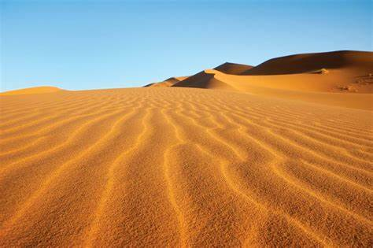
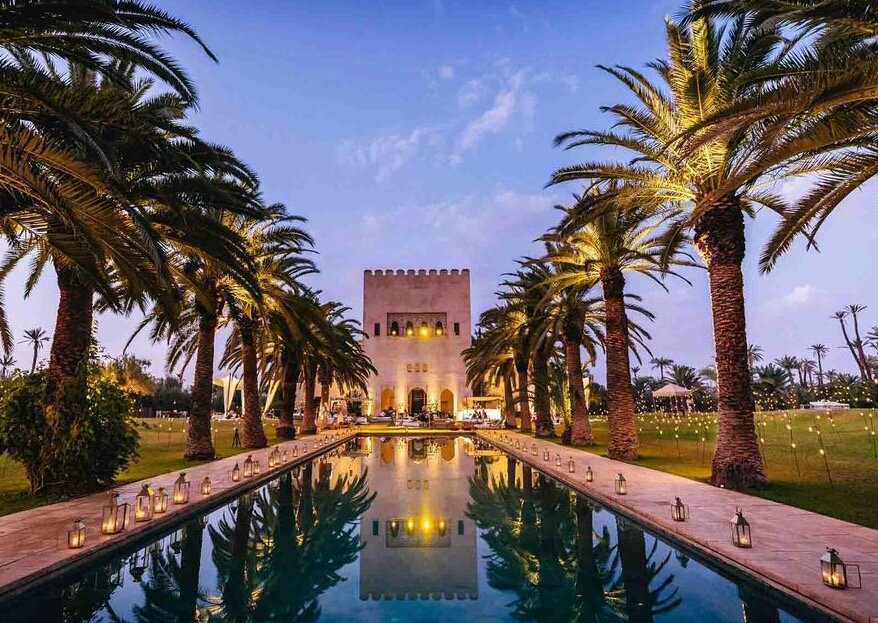
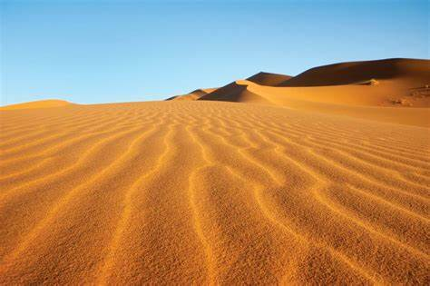
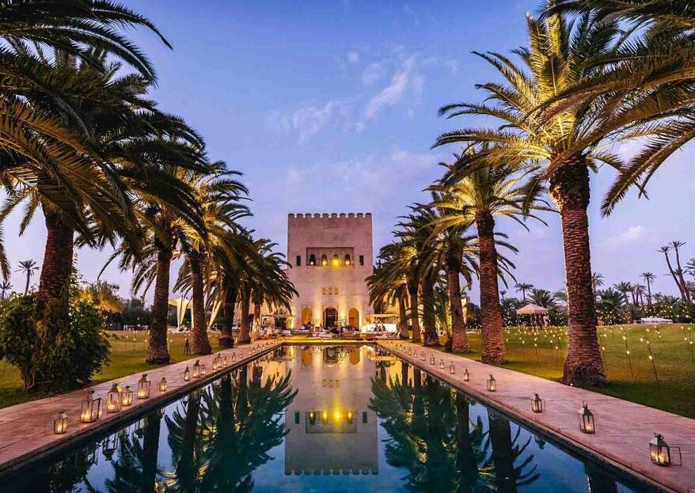
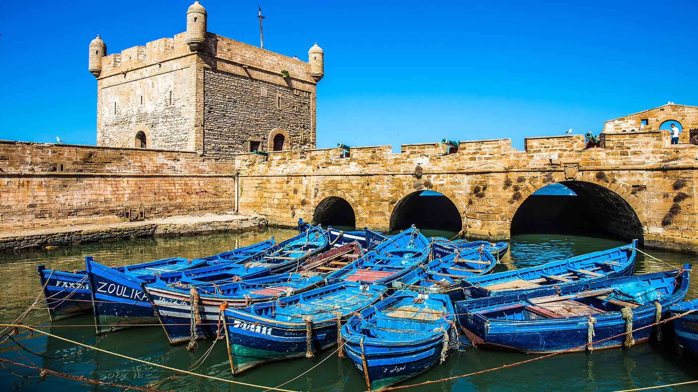
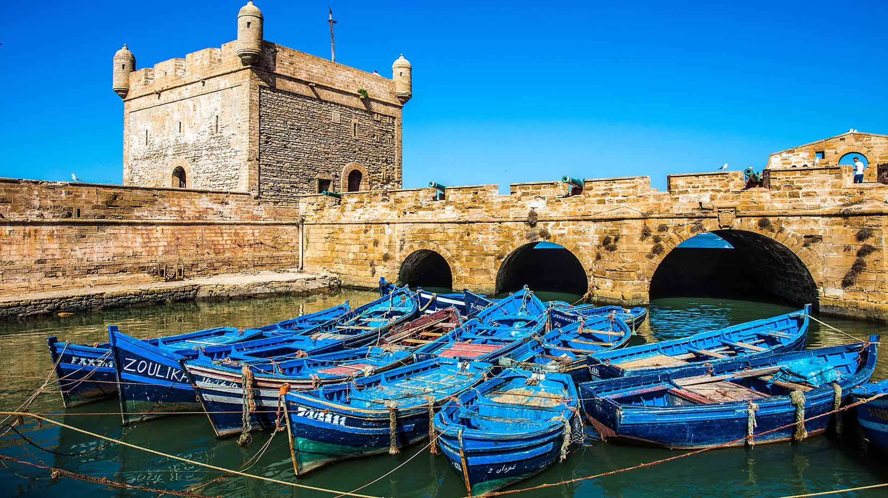

 



Marrakech
Marrakech est bien plus qu'une simple ville, c'est une expérience sensorielle intense. Le tumulte de la place Jemaa el-Fna, les effluves d'épices des souks, les couleurs chatoyantes des riads et la douceur de l'Atlas en toile de fond créent une ambiance unique. Cet article vous invite à plonger au cœur de cette ville ocre et à découvrir ses mille et une facettes.
Lire la suiteAgadir
Agadir est une destination qui plaira à tous les types de voyageurs. Que vous soyez à la recherche de farniente, d'aventures ou de découvertes culturelles, vous trouverez votre bonheur dans cette ville dynamique et accueillante.
Lire la suite